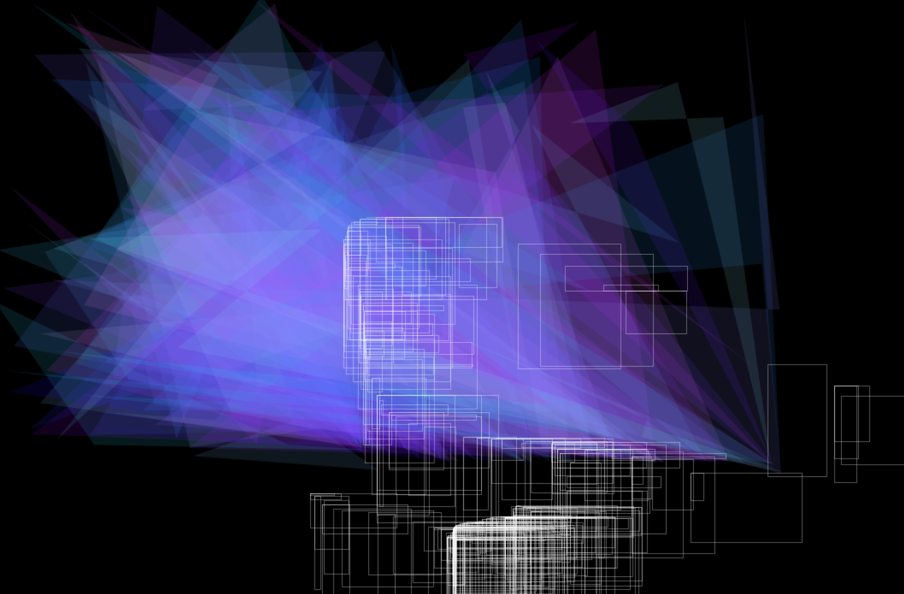
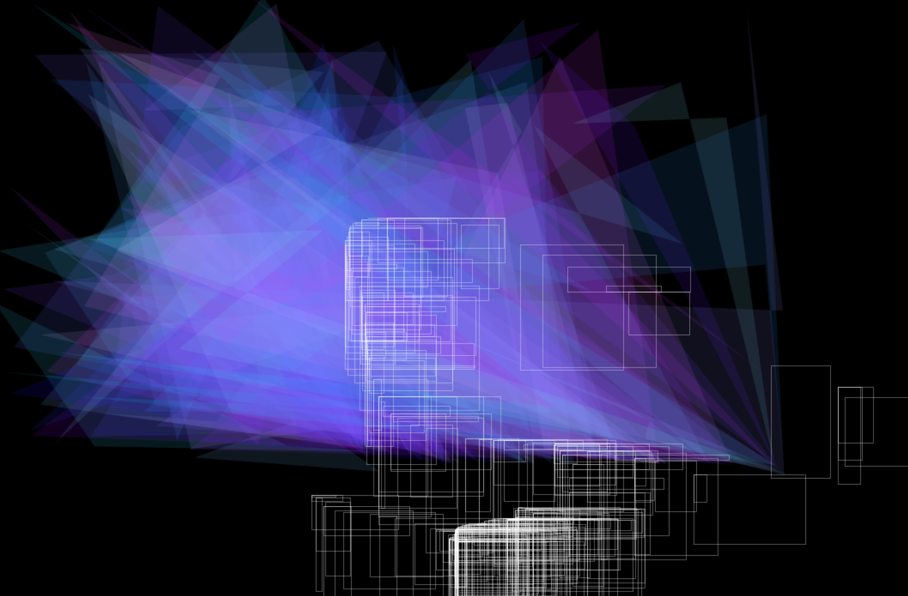

Projet : découverte du capteur de mouvement « Leap Motion » à travers des programmes de dessins.
Description : ce capteur composé de 3 leds et 2 caméras permet de restituer les gestes de notre avant-bras. Le code de l’affiche interactive a été fait avec le logicel Processing et la librairie LeapMotion. Les motifs diffères selon 3 gestes clés. un signe de fin permet d’arrêter le programme et d’imprimer l’affiche.
Objectif : dessiner dans le vide sans médium. Ce programme a servi d’exercice chez les jeunes enfants pour observer leurs appréhensions de l’espace et de l’amplitude de leurs gestes.
 


Exécution du programme
Wiki du projet